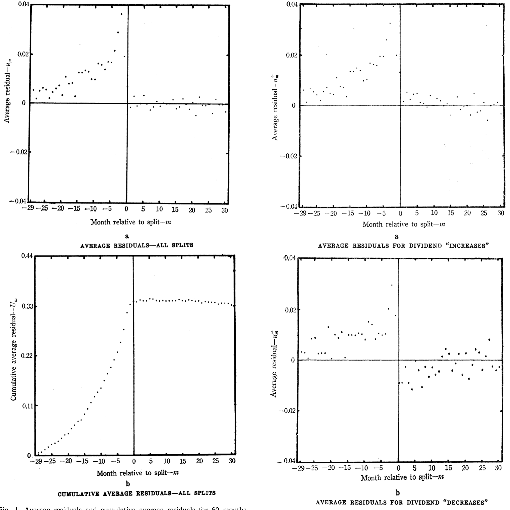
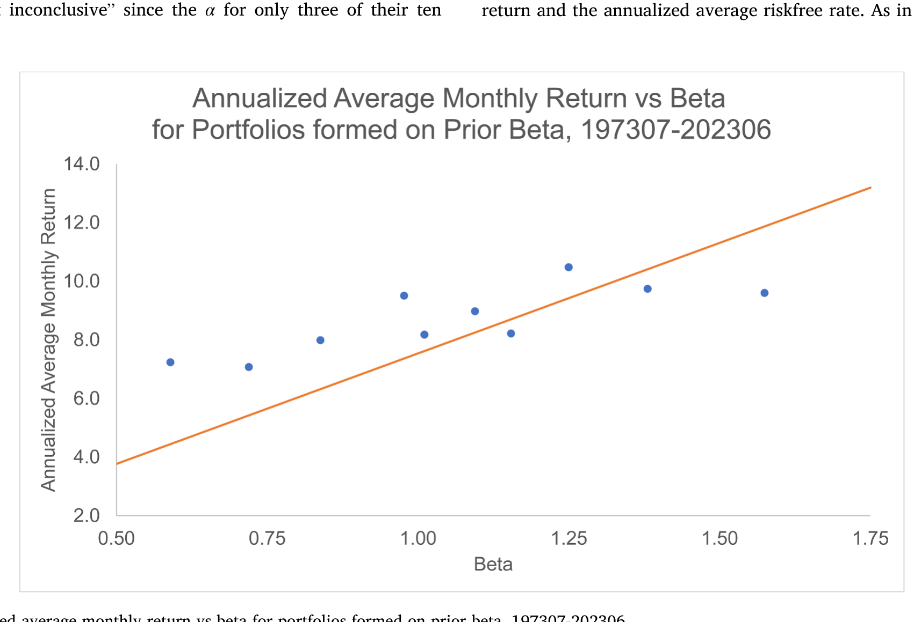
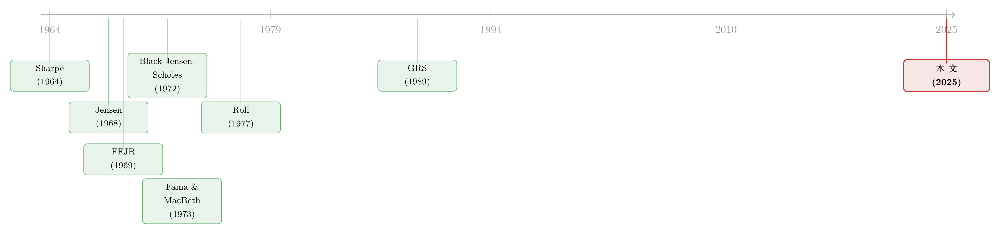

三块积木：那个被「代理理论」盖住的实证 Jensen
本文读的是 Fama & French (2025, Journal of Financial Economics)：人们记住 Michael Jensen，多半是因为他和 Meckling 合写的代理理论；但 Fama 和 French 想提醒你，Jensen 学术生涯的起点是实证资产定价，而且接连三篇都成了地基——「Jensen's alpha」、第一个事件研究、以及第一个时间序列的 CAPM 检验。三块积木，至今还压在整座大厦的底层。
1 引言：一个被「代理理论」盖住的人
提到 Michael（Mike）Jensen，绝大多数金融人脑子里第一个蹦出来的，是 Jensen and Meckling (1976) ——那篇把「代理成本（agency cost）」「所有权结构」写进每一本公司金融教科书的奠基之作。半个世纪过去，这篇论文的引用早已是天文数字（关于它，本博客写过《债务这副药，为什么不能全吃？——重读 Jensen 和 Meckling 五十年》）。所以当 Jensen 去世、各路追忆纷至沓来时，大家谈的也几乎都是「治理」「自由现金流」「市场监督」。
但 Fama 和 French 这篇短短五页的悼念性文章，偏偏不去凑这个热闹。两位作者——一个是 Jensen 的博士导师，一个是有效市场理论的旗手——想把镜头转向 Mike 学术生命的最开头：那时他还不是「代理理论之父」，而是芝加哥大学一个极其出色的博士生，做的是纯粹的实证资产定价（empirical asset pricing）。
文章的核心命题只有一句话，却不容易：Jensen 早期的三篇实证论文，每一篇都是某个研究传统的地基。不是「重要」，是「地基」——后人盖楼，砖缝里还嵌着他当年留下的方法。
这篇文章很短，几乎没有新数据、新结果，更像 Fama-French 写给学界的一封「方法考古笔记」。但正因为是两位亲历者执笔，它把三件后来被反复使用、却很少有人追溯出处的工具，重新摆回了它们诞生的那一刻。读它的乐趣，正在于看见「标准做法」在尚未成为标准之前，是怎样从一个具体问题里硬挤出来的。
下面我们就顺着这三块积木，一块一块往下看。
2 第一块积木：当「超额收益」第一次有了名字
先从第一篇说起。Jensen 的博士论文 Jensen (1969) 研究的是共同基金（mutual fund）的业绩，而真正提出业绩评价新方法的，是发表在 Journal of Finance 上的 Jensen (1968)。
故事的张力在哪？在那个年代，专业投资几乎全是主动管理，选股的人收着高昂的费用，宣称自己有「本事」。可「本事」怎么量？你不能光看一只基金赚了多少——它承担的风险高，本就该赚得多。你需要一个基准（benchmark），把「该赚的」先扣掉，剩下的才是经理人的真本事。
CAPM 恰好提供了这个基准。Sharpe (1964) 和 Lintner (1965) 的资本资产定价模型给出预期收益的关系：
$$ E(R_i) - R_f = \beta_i \big[\, E(R_m) - R_f \,\big]. \tag{1} $$
这里 \(\beta_i\) 衡量资产 \(i\) 的收益对市场收益的敏感度。Jensen 的做法极其简洁：把 (1) 写成一个时间序列回归，给它加一个截距项 \(\alpha_i\)：
$$ R_{it} - R_{ft} = \hat\alpha_i + \hat\beta_i \big[\, R_{mt} - R_{ft} \,\big] + e_{it}. \tag{2} $$
接着是关键的一步。由于扰动项 \(e_{it}\) 的均值为零，回归得到的 \(\hat\alpha_i\) 就估计了资产（或基金组合）\(i\) 超出 CAPM 预测的那部分预期收益——经理人真正「创造」或「毁灭」的价值。这个截距，后来就被全世界叫做 Jensen's alpha。
把它的含义拆开看，可能更清楚：
今天我们随口说的「这只基金有没有 alpha」，源头就在这条回归的截距上。一个看似平淡的截距项，定义了此后半个多世纪的业绩评价语言。
但 Fama-French 没有停在赞美。他们老实地点出，这篇种子论文留下了三个至今仍在被处理的开放问题——这恰恰是石头落地后激起的涟漪：
其一，联合假设的雏形。 受 Roll (1977) 的批评所迫，学界后来终于承认：对 CAPM 的检验、以及把 CAPM 用于业绩评价，其实都没有真正检验 CAPM——因为你用的市场代理（market proxy）永远不是「全部风险资产」的市场组合。Jensen (1968, 1969) 用的代理是 S&P 500。换句话说，他的检验问的其实是「一只基金的平均收益，能不能跑赢『无风险资产 + 复制该基金 S&P 500 beta』的组合」。这是个有意义的问题，但它不等于检验 CAPM 本身。（关于「市场代理其实常常只是一小撮巨头」这件事，可参见《两种市场收益的故事：当「市场组合」其实只是一小撮巨头》。）
其二，多重比较（multiple comparisons）问题。 样本里有 114 只基金，你怎么判断某一只的 \(\hat\alpha_i\)？在一大堆基金里，总有几只的 alpha 估计值离零很远——纯靠运气也会如此。Jensen 报告了 114 只基金的 alpha 的 \(t\) 统计量，但就此打住。直到 Fama and French (2010) 用模拟方法（simulation）去问：整个 \(\hat\alpha_i\) 的分布，是否区别于「所有基金真实 alpha 都为零」时该有的样子。他们的结论更硬：扣费前，基金 alpha 的分布与「真实 alpha 全为零」几乎没差别；而扣费后，alpha 估计值压倒性地为负。和 Jensen 当年的方向，一致。
其三，幸存者偏差（survival bias）。 在 Jensen 的年代，这还是个未被意识到的问题。他的样本是「在样本期末（1964 年）还活着、且数据能回溯到 1955 年或更早」的所有基金——天然漏掉了中途死掉的那些。这会让 \(\hat\alpha_i\) 系统性地偏乐观。
把这三点连起来看，你会发现一个迷人的规律：Jensen 的贡献不在于把问题全部解决，而在于他把问题第一次摆上了台面，后人才有得做。
3 第二块积木：第一个事件研究，与一个「联合假设」的暗扣
接着，一个自然的问题是：如果说 alpha 衡量的是「长期、整体」的超额收益，那市场对一次具体的、公司层面的新闻反应得有多快、多准？
这就引出了第二篇——也是这篇悼文里最有故事的一篇：Fama, Fisher, Jensen, and Roll (1969)，江湖人称 FFJR。它是金融学（乃至会计、法律）史上第一个事件研究（event study）。
故事的缘起很「人间」。CRSP（证券价格研究中心）刚刚做出 1926–1960 年纽交所股票的月度数据库，主持者 James Lorie 担心这套数据没人用，就找到 Fama，建议做一个股票拆分（stock split）的研究来「秀肌肉」。Fama 拉来了 Mike Jensen 和 Richard Roll——两位都是当时芝加哥最顶尖的博士生——干了大部分的活。
论文标题叫《股票价格对新信息的调整》，意图很明确：检验市场有效性。可挑战在于——940 次拆分散落在 1926–1960 这段市场波动天差地别的岁月里，你怎么把它们「对齐」着加总？FFJR 的解法，是那条后来无处不在的市场模型（market model）时间序列回归：
$$ R_{it} = a_i + b_i R_{mt} + e_{it}. \tag{3} $$
\(b_i R_{mt}\) 这一项吸收掉股票收益里「随大盘起伏」的部分，剩下的残差 \(e_{it}\)，就聚焦于股票 \(i\) 在第 \(t\) 月对公司特定信息的反应。盯住拆分前后那些月份里 \(e_{it}\) 的行为，就能看出价格调整得好不好。
但 Fama-French 在这里埋了一个很多读者会漏掉的暗扣，值得慢慢讲。对 (3) 取期望：
$$ E(R_{it}) = a_i + b_i E(R_{mt}). \tag{4} $$
把它和 CAPM 的预期收益条件（由 (1) 整理而来）对照：
$$ E(R_i) = R_f(1 - \beta_i) + \beta_i E(R_m). \tag{5} $$
差别在哪？(5) 说，给定 \(R_f\) 和 \(E(R_m)\)，单靠 \(\beta_i\) 的差异就能描述资产间预期收益的差异——这是 CAPM 强加的约束。而 (4) 里，预期收益既随斜率 \(b_i\) 变、又随不受约束的截距 \(a_i\) 变。也就是说，市场模型 (3)–(4) 对横截面预期收益不施加任何约束。
这恰恰是事件研究能成立的妙处：当你关心的只是价格对某个公司特定事件（比如拆分）的调整，你根本不需要去约束股票之间预期收益的差异，松一点反而干净。
可松绑是有代价的。(3)–(4) 背后隐含的市场均衡假设是什么？是 \(a_i\) 和 \(b_i\) 没有时间下标——它们在估计期和事件期里被假定为常数。FFJR 的做法是：用资产 \(i\) 除拆分前后各 30 个月之外的全部月度数据来估 \(a_i\)、\(b_i\)，再回代算出拆分前后 60 个月的残差 \(e_{it}\)。如果「\(a_i\)、\(b_i\) 恒定」成立，这些残差就干净地捕捉了拆分的效应；如果不成立，残差就被 \(a_i\)、\(b_i\) 的漂移污染了。
这正是 Fama (1970, 1998) 反复强调的联合假设问题（joint hypothesis problem）在拆分研究里的具体形态：你没法在不指定「市场该怎样」的模型的前提下，去检验「市场是否做了它该做的事」。一切有效性检验，都是「有效性 + 所假定的均衡模型」的联合检验。Fama-French 坦诚地补了一句：事后看，FFJR 用全样本估均衡参数的做法「远非最优」——这个估计窗口该多长的问题，后来由 Brown and Warner (1980) 专门研究。
那结果呢？FFJR 把 940 次拆分、每次拆分前后 60 个月的残差求平均。如下面的图 1 所示：拆分前 29 个月里，平均异常收益持续为正，且越临近拆分越大；而拆分当月之后，累积平均残差（cumulative average residual, CAR）几乎走平。

Figure 1: Average residuals and cumulative average residuals for 60 months
这张图说了一件很「有效市场」的事：拆分本身并不创造价值，市场早在拆分前就把信息消化掉了。FFJR 进一步把样本拆成「拆分后提高股利」和「没提高」两组，发现两组 CAR 在拆分前几个月里急剧分化——市场仿佛能提前识别哪些公司更可能加股利，并给它们更高的异常收益。一句话：拆分的信息，关乎的其实是未来的股利。引用与 Jensen、Roll 同窗的 Ball (2015) 的话，「这篇论文的影响是巨大的，因为它在当时重构了我们思考资产价格的方式。」
顺带一提，事件研究这套技术今天虽已标准化，却也滋生出新的统计陷阱——比如横截面上「假阳性」的推断问题。关于这一点，可参见《事件研究里的「假阳性」：当一根 t 值不再等于因果》。半个世纪前埋下的「多重比较」隐忧，至今还在长出新的枝桠。
4 第三块积木：把检验「竖」过来，和一个关于「抽样误差」的洞见
然后，第三篇登场——也是这篇悼文里方法含量最高的一篇：Black, Jensen, and Scholes (1972)，简称 BJS。Mike 这次的合作者是 Fischer Black 和 Myron Scholes。
要理解它的份量，得先看它面对的是什么。在 BJS 之前，CAPM 的检验几乎全是横截面回归（cross-section regression）：把一堆个股的平均超额收益，对它们样本期的 beta 做回归，看那个斜率是不是等于预期的市场超额收益（即 (1) 所预测的）。
BJS 的第一个贡献，是把检验「竖」了过来——他们做的是时间序列检验：在「个股超额收益对市场超额收益」的时间序列回归里（也就是 (2) 的精神），问那些截距是否区别于零。在他们之前，几乎没人这么干；在他们之后，这成了资产定价研究里最常见的检验形态之一。
但 Fama-French 认为，BJS 真正不朽的洞见藏在一个更技术、却极其深刻的地方——抽样误差的相互依赖（interdependence of sampling errors）。
慢慢说。横截面回归里，风险溢价估计的标准误被严重低估了，原因是它们没有考虑各资产预期收益估计值之间的抽样误差是相关的。个股的收益高度同向波动，你对它们 beta 和平均收益的估计误差自然也彼此纠缠；若把它们当成独立观测去算标准误，精度就被人为夸大了。BJS (1972) 给出了一个复杂的解法。后来 Fama and MacBeth (1973) 提供了一个简单得多的替代方案——并最终胜出、成为标准——但 Fama-French 特意强调：FM 的简洁方法，解的正是 BJS 挖出来的那个问题。功劳得记在源头上。
BJS 还顺手留下了两件「标准工具」：
- 十组合 + 预排序/后排序（pre-sort post-sort）技术。 用上百只个股做单变量 CAPM alpha 检验，多重比较问题比 114 只基金更极端。BJS 把股票按估计的 beta 每年分成十个组合来缓解。但这里有个测量误差陷阱：如果用同一批 beta 估计值既去分组、又去度量收益-beta 关系，结果会有偏。BJS 的解法是——用 \(t\) 年之前观测到的收益估 beta、据此在 \(t\) 年分组；分组之后再把组合收益接续起来，去估检验用的 beta。这套「先用旧数据排序、再用新数据检验」的手法，从此成了资产定价工具箱的标配。
- 等权组合的代价。 BJS 用的市场代理是纽交所股票的等权（equal-weight）组合——离 CAPM 要求的价值加权市场组合相当远。BJS 自己没点破这一点，是 Roll (1977) 把它有力地戳穿的。
那 BJS 看到了什么？他们的全样本检验「somewhat inconclusive」——十个组合里只有三个的 alpha 区别于零，而且推断还只基于单变量 \(t\) 统计量。（多重比较的彻底解法，要等到 Gibbons, Ross, and Shanken (1989) 才出现：GRS 利用「所有检验资产真实 alpha 为零」等价于「市场代理相对这些资产均值-方差有效」，构造出一个 F 检验；他们用 GRS 统计量复刻 BJS，结果无法拒绝 CRSP 等权组合的有效性。）
但真正关键、也真正稳健的，是另一个反转：BJS 的时间序列检验支持了早期横截面检验的一个发现——低 beta 股票的平均收益高于 CAPM 预测，高 beta 股票的平均收益低于预测。收益-beta 关系，比 CAPM 那条线更平。于是 BJS 转向 Black (1972) 的「零 beta」模型：当不存在无风险借贷时，CAPM 里的 \(R_f\) 应换成零 beta 组合的预期收益 \(E(R_z)\)：
$$ E(R_i) = E(R_z)(1 - \beta_i) + \beta_i E(R_m). \tag{6} $$
把它和 CAPM 的 (5) 并排放，差别一目了然：无非是用 \(E(R_z)\) 顶替了 \(R_f\)。而 \(E(R_z) > R_f\)，恰好能把那条「过平」的实证关系拉到模型里。
最妙的是 Fama-French 在文末补的一刀：这条「平坦的收益-beta 关系」极其稳健，在 BJS 之后整整 50 年的美国股票里依然成立。下面的图 3，用的是 1973 年 7 月至 2023 年 6 月、按事前 beta 分成十个组合的数据（方法接近 Fama and French (2006)，市场代理换成了 CRSP 价值加权组合）：

Figure 3: Annualized average monthly return vs beta for portfolios formed on prior beta, 197307-202306
如图 3 所示，斜线是 CAPM 的预测（截距为年化平均无风险利率，斜率为年化平均市场超额收益）。而十个组合的实际点——高 beta 端普遍低于斜线、低 beta 端高于斜线，且大致落在一条比 CAPM 更平的直线上，正如 Black (1972) 模型所预言。半个世纪、换了市场组合，结论纹丝不动。
不过 Fama-French 也老实说：Black (1972) 模型能描述「按 beta 排序」的组合，却在别的排序上失灵——它解释不了价值效应（Fama and French, 1992；Lakonishok et al., 1994）和动量效应（Jegadeesh and Titman, 1993）。地基稳，不代表整栋楼都靠它撑得住。
5 文献脉络：一条从「怎么测」到「怎么检验」的暗线
退一步看这三块积木，会发现它们串起的，其实是实证资产定价方法论自己的成长史。
最早是理论：Sharpe (1964) 和 Lintner (1965) 给出 CAPM，告诉你预期收益「该」长什么样。但模型摆在那儿，怎么拿数据去碰它，是一片空白。Jensen 的三篇论文，正好补上了这条从「测量」到「检验」的链路——

Jensen (1968, 1969) 解决了「怎么测一只基金的超额收益」（alpha）；FFJR (1969) 解决了「怎么测市场对一次事件的反应」（事件研究 + 市场模型）；BJS (1972) 解决了「怎么严肃地检验 CAPM 的横截面含义」（时间序列检验 + 抽样误差的相互依赖）。三者环环相扣。
而每一块积木又各自长出后续：alpha 这条线，延伸到 Fama and French (2010) 用模拟重审基金业绩；事件研究这条线，延伸到 Brown and Warner (1980) 对估计窗口的研究；BJS 这条线，则一头连向 Fama and MacBeth (1973) 的简洁替代、Roll (1977) 对市场代理的釜底抽薪、以及 GRS (1989) 对多重比较的彻底解法。Black (1972) 的零 beta 模型则在一旁，为那条「过平」的实证关系提供了归宿。
Fama-French 这篇 2025 年的短文，就站在这条脉络的回望点上：它不增添新结论，而是把三块地基重新指认出来，提醒后来者——你脚下踩的标准做法，多半是 Mike 当年第一个踩出来的。
6 评论与延伸（Q&A + 研究方向）
(a) 几个可能的疑问
Q：既然 Jensen 最大的名气是代理理论，为什么 Fama-French 偏要写他的实证工作？
一来这是 JFE 的悼念专辑，Fama 是 Jensen 的导师、FFJR 的共同作者，最有资格谈这段；二来，恰恰因为代理理论的光芒太盛，Jensen 的实证贡献反而被「盖住」了。Fama-French 想纠正的，正是这种以偏概全的记忆——同主题的其他追忆，可见《送别迈克尔·詹森》与《用引用数丈量一生：詹森留给金融学的几堂课》。
Q：「Jensen's alpha」和今天因子模型里的 alpha 是一回事吗？
精神一致，基准不同。Jensen (1968) 的基准是单因子 CAPM（市场代理用 S&P 500），(2) 式的截距即 alpha。今天的 alpha 通常是相对三因子、五因子、甚至机器学习基准而言的截距。换了基准，alpha 的含义随之改变——但「扣掉模型该有的、看剩下多少」这个内核，是 Jensen 定下的。
Q：FFJR 的「联合假设问题」到底卡在哪？为什么说它是个暗扣？
卡在：市场模型 (3) 假定 \(a_i\)、\(b_i\) 在估计期和事件期里恒定。若这个均衡假设不成立，你算出的「异常」残差就被参数漂移污染了，分不清是「市场没及时反应」还是「我的基准模型错了」。这就是为什么 Fama (1970) 说有效性检验永远是联合检验——你没法脱离「市场该怎样」的模型，去判断「市场是否如其所应」。
Q：BJS 关于「抽样误差相互依赖」的洞见，今天还重要吗？
非常重要，只是换了形态。它本质上是「个股收益高度相关 ⇒ 横截面里的观测不独立 ⇒ 朴素标准误被低估」。今天我们用 Fama-MacBeth、用聚类标准误、用 GRS F 检验，处理的都是这同一类问题。Fama-French 特意强调 FM 是「BJS 问题的解」，就是要把功劳记回源头。
Q：图 3 显示收益-beta 关系「过平」，这算不算说 CAPM 被证伪了？
它说的是单因子 CAPM 在 beta 维度上系统性偏差——高 beta 赚得比预测少、低 beta 赚得比预测多，且这偏差 50 年稳健。但「过平」恰好能被 Black (1972) 零 beta 模型 (6) 容纳。所以更准确的说法是：严格的无风险借贷版 CAPM 不成立，但「线性、由 beta 主导」的结构在 beta 排序上依然站得住——只是它解释不了价值、动量等别的排序。
Q：这篇文章对今天做实证的人，有什么「方法论」上的提醒？
至少三条：其一，任何「异常收益」都依赖一个基准模型，报告 alpha 前先想清楚联合假设；其二，多重比较是老问题、不是新发明，几十只资产的单变量 \(t\) 值要小心；其三，用同一批估计值「既排序又检验」会引入偏差，预排序/后排序不是形式主义，是必要的纪律。
(b) 几个可能的研究问题与提案
1. 把「事件研究 + 联合假设」搬到公司债市场。
【经济故事】事件研究几乎都长在股票上，而公司债的「事件」（评级变动、要约回购、契约违约）信息含量极高，市场调整却更慢、更分段。把 FFJR 的市场模型逻辑移到债券，需要重新定义「市场模型」的基准（信用利差曲线？同评级同久期组合？），这本身就是一次对「联合假设」的再思考。
【可行性】中。数据上 TRACE + Mergent FISD 足够；难点在债券的非同步交易和流动性噪声会污染残差，基准模型的设定空间很大、结论对设定敏感。（相关的债券定价视角，可参见《谁在持有这张债券，决定了它的价格》。）
2. 用 Fama-French (2010) 的模拟法，重审公司债主动型基金的 alpha 分布。
【经济故事】Jensen→FF2010 这条线在股票基金上已很成熟，但债券基金的「技能 vs 运气」研究少得多。债券基金的基准更难定（利率久期、信用、流动性三重暴露），alpha 的「真零分布」长什么样是开放问题。
【可行性】中高。CRSP 共同基金库有债券基金，模拟框架现成可借。主要挑战是构造一个令人信服的多因子债券基准来跑 bootstrap。
3. 抽样误差相互依赖，在「外资持有人」横截面里有多严重？
【经济故事】当我们按「外资持股比例」给债券或股票排序、检验其收益差异时，同一批外资往往同时持有许多相关标的——这正是 BJS 担心的那种抽样误差纠缠。忽视它会高估「外资溢价」的显著性。
【可行性】高。需要持仓层面的外资数据（如 13F、TIC、或托管数据），用 GRS / 聚类 / 模拟去量化朴素标准误被夸大的程度，识别上干净、方法上有现成模板。
4. 拆分（或现代等价物：高送转、股票回购）的信息含量，在被动投资时代是否衰减？
【经济故事】FFJR 说拆分的信息「关乎未来股利」。但在指数化、ETF 大行其道的今天，价格发现的机制变了——拆分前的 CAR 斜坡是否变缓？事件后是否出现机械性的指数再平衡冲击？
【可行性】中。CRSP 事件数据充足；难点是把「信息驱动」的价格调整与「指数再平衡/流动性」的机械效应分离开（相关思路见《你以为买的是「整个市场」，其实买的是一套交易规则》）。
我的判断
这是一篇史料价值大于学术增量的文章，但它的史料价值非常高。Fama 和 French 没有给出任何新结果（图 3 是已知规律的又一次确认），他们做的是一件更稀缺的事——亲历者的精确归因。把 Jensen's alpha、事件研究、时间序列检验+抽样误差洞见这三块积木，连同它们各自的「开放问题→后续解法」链条，一并钉回原位。对正在学习实证资产定价的人，这五页纸抵得上一节方法论导论课。
要说担忧，倒不在「识别」（这不是一篇实证论文），而在视角的选择性。文章把三篇论文都讲成「foundational」，叙事难免偏向胜利者的回望：FFJR 用全样本估均衡参数「远非最优」、BJS 用等权组合「离市场组合很远」这些当年的局限，被处理得相当轻描淡写，更多笔墨给了它们「催生了什么」。这当然合乎悼念文章的体裁，但读者要自己记得：地基之所以成为地基，一半是因为奠基者的洞见，另一半是因为后人替它补了无数根钢筋——Roll、Brown-Warner、Fama-MacBeth、GRS 的名字，本该和 Jensen 并排刻在底座上。
后续我最想看到的，其实不是更多回望，而是把这三套方法搬进它们尚未充分进入的市场——尤其是公司债与信用市场。事件研究在债券上仍未标准化，基金 alpha 的「真零分布」在债券上仍是问号，而 BJS 的「抽样误差相互依赖」在外资高度集中持有的横截面里，可能正被系统性地忽视。半个世纪前为股票打下的地基，换一块土地，未必还托得住——这恰恰是值得做的地方。
参考文献
- Black, F. (1972). Capital market equilibrium with restricted borrowing. Journal of Business 45(3), 444–455.
- Black, F., Jensen, M. C., & Scholes, M. (1972). The capital asset pricing model: some empirical tests. In M. C. Jensen (Ed.), Studies in the Theory of Capital Markets. Praeger, New York, pp. 79–121.
- Brown, S. J., & Warner, J. B. (1980). Measuring security price performance. Journal of Financial Economics 8(3), 205–258.
- Fama, E. F. (1970). Efficient capital markets: a review of theory and empirical work. Journal of Finance 25(2), 383–417.
- Fama, E. F. (1998). Market efficiency, long-term returns, and behavioral finance. Journal of Financial Economics 49, 283–306.
- Fama, E. F., & French, K. R. (1992). The cross-section of expected stock returns. Journal of Finance 47(2), 427–465.
- Fama, E. F., & French, K. R. (2006). The value premium and the CAPM. Journal of Finance 61(5), 2163–2185.
- Fama, E. F., & French, K. R. (2010). Luck versus skill in the cross-section of mutual fund returns. Journal of Finance 65(5), 1915–1947.
- Fama, E. F., & French, K. R. (2025). Michael C. Jensen's empirical work. Journal of Financial Economics 172, 104119.
- Fama, E. F., Fisher, L., Jensen, M. C., & Roll, R. (1969). The adjustment of stock prices to new information. International Economic Review 10(1), 1–21.
- Fama, E. F., & MacBeth, J. D. (1973). Risk, return, and equilibrium: empirical tests. Journal of Political Economy 81(3), 603–636.
- Gibbons, M. R., Ross, S. A., & Shanken, J. (1989). A test of the efficiency of a given portfolio. Econometrica 57(5), 1121–1152.
- Jegadeesh, N., & Titman, S. (1993). Returns to buying winners and selling losers: implications for stock market efficiency. Journal of Finance 48(1), 65–91.
- Jensen, M. C. (1968). The performance of mutual funds in the period 1945–1964. Journal of Finance 23(2), 389–416.
- Jensen, M. C. (1969). Risk, the pricing of capital assets, and the evaluation of investment portfolios. Journal of Business 42(2), 167–247.
- Jensen, M. C., & Meckling, W. H. (1976). Theory of the firm: managerial behavior, agency costs and ownership structure. Journal of Financial Economics 3(4), 305–360.
- Lakonishok, J., Shleifer, A., & Vishny, R. (1994). Contrarian investment, extrapolation, and risk. Journal of Finance 49(5), 1541–1578.
- Lintner, J. (1965). The valuation of risk assets and the selection of risky investments in stock portfolios and capital budgets. Review of Economics and Statistics 47(1), 13–37.
- Roll, R. (1977). A critique of the asset pricing theory's tests Part I: On past and potential testability of the theory. Journal of Financial Economics 4(2), 129–176.
- Sharpe, W. F. (1964). Capital asset prices: a theory of market equilibrium under conditions of risk. Journal of Finance 19(3), 425–442.